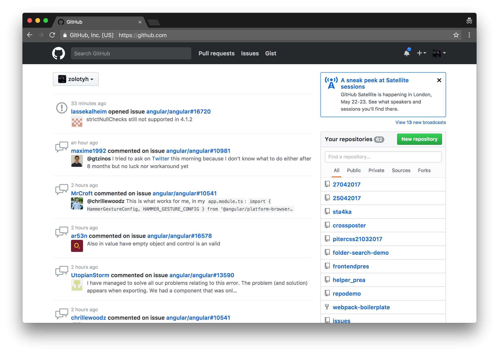

ES2017 vs Typescript vs Dart. Сравниваем без эмоций
Алексей Золотых
| ES 2017 | Typescript | Dart |
|---|---|---|

|

|
Предвзятость
Я люблю Dart
Практика — критерий истины
Тестовый проект
- Команда
- Сроки
- Требования
- UX/GUI
Клон github
Клон github
- Команда — нужно найти 10 разработчиков 👍
- Сроки — 1 год 👍
- Требования — воруем 👍
- UX/GUI — нагло воруем 👍
Краткое содержание
- Качество
- Разработчики
- Сборка
- Возможности языка
- Типизация
- Производительность
1. Качество
| Критерий | ES2017 | Typescript | Dart |
|---|---|---|---|
| 🦄 | ∞ /347 | 215 | 154 |
| 📔 | 3/10 | 5/10 | 8/10 |
| 🐞 | 76🐞 91✓ |
620🐞 2857✓ |
2015🐞 878💩 |
| ★ | 21 000 | 22 000 | 1 200 |
| Коммиты | 8 000 | 17 000 | 47 000 |
Чем больше коммитов, тем больше багов
1.Качество
- ES2017
- Typescript
- Dart
1. Мнение жюри (качество)
2. Разработчики
- ES2017 — все знают javascript 💪
- Typescript — 💪💪💪
- Dart — а он еще жив!? 😱
- Хорошо приживаются ребята из бекенда
- Хорошо приживаются ребята из фронтенда
2. Мнение жюри
3. Сборка
3.1 Утилиты для сборки
TS/ES2017
- Grunt
- Gulp
- Webpack
- Rollup
- ...
Требуется Webpack DevOps, опыт работы 5 лет
Dart
pub — из коробки
3.2 Пакетный менеджер
TS/ES2017
- bower
- npm
- yarn
- pnpm
- ...
Dart
pub — из коробки
Должен существовать один — и, желательно, только один — очевидный способ сделать это.
npm vs pub
| npm | pub | |
|---|---|---|
| Разные версии | ✓ | ⛔️ |
| Lock зависимостей | ✓ | ✓ |
| Способ хранения зависимостей | копии файлов | символьные ссылки |
| Размер на диске | 500мб | 600кб |
3.3 Компиляция
ES2017
- Сборка не нужна
- ES2017 ⟶ ES5 +
- ES2017 ⟶ Проверка типов ⟶ ES5 +
Typescript
⟶ проверка типов ⟶ ES5 +
⟶ проверка типов ⟶ ES2017 ⟶ ES5 +
Dart
⟶ проверка типов ⟶ 🛵
дерево-встряхивании
tree-shaking
math.js
export function square(x) {
return x * x;
}
export function cube(x) {
return x * x * x;
}math.js
export function square(x) {
return x * x;
}
export function cube(x) {
return x * x * x;
}math.js
export function square(x) {
return x * x;
}
export function cube(x) {
return x * x * x;
}main.js
import {cube} from './math.js';
console.log(cube(5)); // 125Выходной файл
console.log(
function(n){return n*n*n}(5)
)Выходной файл
console.log(
function(n){return n*n*n}(5)
)А что же Dart?
main: function() {
H.printString("125");
}
Angular — размер сборки
- TS — 383 кб
- Dart — 270 кб
3. Сборка
- Dart
- Typescript
- ES2017
3. Мнение жюри
4. Возможности языка
4.1 Асинхронность
Typescript/ES2017
async function sleep() {
console.log('before');
var callback = cb => setTimeout(cb);
await new Promise(callback);
console.log('after');
}Typescript/ES2017
async function sleep() {
console.log('before');
var callback = cb => setTimeout(cb);
await new Promise(callback);
console.log('after');
}Typescript/ES2017
async function sleep() {
console.log('before');
var callback = cb => setTimeout(cb);
await new Promise(callback);
console.log('after');
}Typescript/ES2017
async function sleep() {
console.log('before');
var callback = cb => setTimeout(cb);
await new Promise(callback);
console.log('after');
}Dart
Future timer() async {
print('before');
await new Future.delayed(...);
print('after');
}Dart
Future timer() async {
print('before');
await new Future.delayed(...);
print('after');
}Dart
Future timer() async {
print('before');
await new Future.delayed(...);
print('after');
}Dart
Future timer() async {
print('before');
await new Future.delayed(...);
print('after');
}Генераторы
Typescript/ES2017
function* naturalsTo(n: Number): IterableIterator<Number> {
let k = 0;
while(k < n) yield i++;
}Typescript/ES2017
function* naturalsTo(n: Number): IterableIterator<Number> {
let k = 0;
while(k < n) yield i++;
}
interface IterableIterator<T> extends Iterator>T> {
[Symbol.iterator](): IterableIterato>T>
}
interface Iterator<T> {
next(value?: any): IteratorResult<T>
return?(value?: any): IteratorResult<T>
throw?(e?: any): IteratorResult<T>
}Dart
Iterable<int> naturalsTo(n) sync* {
int k = 0;
while (k < n) yield k++;
}Iterable
- any(bool f(E element)) → bool
- contains(Object element) → bool
- elementAt(int index) → E
- every(bool f(E element)) → bool
- expand<T>(Iterable<T> f(E element)) → Iterable<T>
- firstWhere(bool test(E element), { E orElse() }) → E
- fold<T>(T initialValue, T combine(T previousValue, E element)) → T
- forEach(void f(E element)) → void
- join([String separator = "" ]) → String
- lastWhere(bool test(E element), { E orElse() }) → E
- map<T>(T f(E e)) → Iterable<T>
- reduce(E combine(E value, E element)) → E
- singleWhere(bool test(E element)) → E
- skip(int count) → Iterable<E>
- skipWhile(bool test(E value)) → Iterable<E>
- take(int count) → Iterable<E>
- takeWhile(bool test(E value)) → Iterable<E>
- toList({bool growable: true }) → List<E>
- toSet() → Set<E>
- toString() → String
- where(bool test(E element)) → Iterable<E>
Iterable naturalsDownFrom(n) sync* {
if (n > 0) {
yield n;
for (int i in naturalsDownFrom(n-1)) { yield i; }
}
}
Iterable naturalsDownFrom(n) sync* {
if ( n > 0) {
yield n;
yield* naturalsDownFrom(n-1);
}
}Typescript/ES2017
async function* f(p) {
yield 1;
await p;
yield* [2, 3];
yield* (async function *() {
await p;
yield 4;
})();
}Typescript/ES2017
async function* g() { ... }
async function f() {
for await (const x of g()) {
}
}Dart
Stream asynchronousNaturalsTo(n) async* {
int k = 0;
while (k < n) yield k++;
}Dart
Stream asynchronousNaturalsTo(n) async* {
int k = 0;
while (k < n) yield k++;
}Stream
- any(bool test(T element)) → Future<bool>
- asBroadcastStream({void onListen(StreamSubscription<T> subscription), void onCancel(StreamSubscription<T> subscription) }) → Stream<T>
- transform<S>(StreamTransformer<T, S> streamTransformer) → Stream<S>
- asyncExpand<E>(Stream<E> convert(T event)) → Stream<E>
- asyncMap<E>(dynamic convert(T event)) → Stream<E>
- contains(Object needle) → Future<bool>
- distinct([bool equals(T previous, T next) ]) → Stream<T>
- drain<E>([E futureValue ]) → Future<E>
- Discards all data on the stream, but signals when it's done or an error occurred.
- elementAt(int index) → Future<T>
- every(bool test(T element)) → Future<bool>
- expand<S>(Iterable<S> convert(T value)) → Stream<S>
- firstWhere(bool test(T element), { Object defaultValue() }) → Future
- fold<S>(S initialValue, S combine(S previous, T element)) → Future<S>
- forEach(void action(T element)) → Future
- handleError(Function onError, { bool test(error) }) → Stream<T>
- join([String separator = "" ]) → Future<String>
- lastWhere(bool test(T element), { Object defaultValue() }) → Future
- listen(void onData(T event), { Function onError, void onDone(), bool cancelOnError }) → StreamSubscription<T>
- map<S>(S convert(T event)) → Stream<S>
- pipe(StreamConsumer<T> streamConsumer) → Future
- reduce(T combine(T previous, T element)) → Future<T>
- singleWhere(bool test(T element)) → Future<T>
- skip(int count) → Stream<T>
- skipWhile(bool test(T element)) → Stream<T>
- take(int count) → Stream<T>
- takeWhile(bool test(T element)) → Stream<T>
- timeout(Duration timeLimit, { void onTimeout(EventSink<T> sink) }) → Stream<T>
- toList() → Future<List<T>>
- toSet() → Future<Set<T>>
- where(bool test(T event)) → Stream<T>
- noSuchMethod(Invocation invocation) → dynamic
- toString() → String
Stream
- any(bool test(T element)) → Future<bool>
- asBroadcastStream({void onListen(StreamSubscription<T> subscription), void onCancel(StreamSubscription<T> subscription) }) → Stream<T>
- transform<S>(StreamTransformer<T, S> streamTransformer) → Stream<S>
- asyncExpand<E>(Stream<E> convert(T event)) → Stream<E>
- asyncMap<E>(dynamic convert(T event)) → Stream<E>
- contains(Object needle) → Future<bool>
- distinct([bool equals(T previous, T next) ]) → Stream<T>
- drain<E>([E futureValue ]) → Future<E>
- Discards all data on the stream, but signals when it's done or an error occurred.
- elementAt(int index) → Future<T>
- every(bool test(T element)) → Future<bool>
- expand<S>(Iterable<S> convert(T value)) → Stream<S>
- firstWhere(bool test(T element), { Object defaultValue() }) → Future
- fold<S>(S initialValue, S combine(S previous, T element)) → Future<S>
- forEach(void action(T element)) → Future
- handleError(Function onError, { bool test(error) }) → Stream<T>
- join([String separator = "" ]) → Future<String>
- lastWhere(bool test(T element), { Object defaultValue() }) → Future
- listen(void onData(T event), { Function onError, void onDone(), bool cancelOnError }) → StreamSubscription<T>
- map<S>(S convert(T event)) → Stream<S>
- pipe(StreamConsumer<T> streamConsumer) → Future
- reduce(T combine(T previous, T element)) → Future<T>
- singleWhere(bool test(T element)) → Future<T>
- skip(int count) → Stream<T>
- skipWhile(bool test(T element)) → Stream<T>
- take(int count) → Stream<T>
- takeWhile(bool test(T element)) → Stream<T>
- timeout(Duration timeLimit, { void onTimeout(EventSink<T> sink) }) → Stream<T>
- toList() → Future<List<T>>
- toSet() → Future<Set<T>>
- where(bool test(T event)) → Stream<T>
- noSuchMethod(Invocation invocation) → dynamic
- toString() → String
RxJS — потоки для бедных
За все нужно платить
4.3 Коллекции
Про что это?! Array, Object?
Map, Set?
Маp и Set есть в ES2017 и в Typescript
Dart
Перегрузка операторов в Dart
class MyClass {
operator ==(MyClass other) {
// compare this to other
}
operator [](int i) => list[i]; // get
operator []=(int i, int value) => _list[i] = value; // set
}
- DoubleLinkedQueue
- HashMap
- HashSet
- Map
- Set
- LinkedHashSet
- LinkedList
- LinkedHashMap
- ...
4.4 Зоны
import 'dart:async';
main() {
foo();
var future;
runZoned(() { // Starts a new child zone (zone #2).
future = new Future(bar).then(baz);
});
future.then(qux);
}
foo() => ...foo-body... // Executed twice (once each in two zones).
bar() => ...bar-body...
baz(x) => runZoned(() => foo()); // New child zone (zone #3).
qux(x) => ...qux-body...4.4 Зоны
import 'dart:async';
main() {
foo();
var future;
runZoned(() { // Starts a new child zone (zone #2).
future = new Future(bar).then(baz);
});
future.then(qux);
}
foo() => ...foo-body... // Executed twice (once each in two zones).
bar() => ...bar-body...
baz(x) => runZoned(() => foo()); // New child zone (zone #3).
qux(x) => ...qux-body...4.5 Ленивая подгрузка модулей
import 'package:deferred/hello.dart' deferred as hello;
greet() async {
await hello.loadLibrary();
hello.printGreeting();
}
4.6 Деструктуризация
Деструктуризация в typescript/ES2017
let [firstName, lastName] = ["Alex", "Zolotykh"];
console.log(firstName, lastName); // Alex, ZolotyhДеструктуризация в Dart
var {x, m*, y} = [5, 2, 3, 1];
assert(x == 5);
assert(y == 1);
assert(m == [2, 3]);
4.7 Взаимодействие с JS
ES2017
Typescript
Все или почти все типы написаны!
github.com/typings/typingsМожно написать свое
Dart 💩
@JS()
external printOptions(Options options);
@JS()
@anonymous
class Options {
external bool get responsive;
external factory Options({bool responsive});
}В dart нет arguments
function(){
console.log(arguments);
}noSuchMethod в Dart
class MyClass {
noSuchMethod(String name, List args){
print('$name, ${args.length}')
}
}4. Возможности
- Dart
- ES2017
- Typescript
4. Мнение жюри
5. Типизация
Можно использовать Flow
interface Conference {
method2();
}
class HolyJS implements Conference {
method2() {
console.log(3);
}
}
var HolyJS = (function () {
function HolyJS() {...}
HolyJS.prototype.method = function () {...};
// Фиг вам! А не интерфейс
return HolyJS;
}());
abstract class Conference { void method(); }
class HolyJS implements Conference {
void method(){ print('Hahaha!');}
}
void main(){
var holy2017 = new HolyJS();
print(holy2017 is Conference);
}
H.printString("true");
Non-Nullable Types (Typescript/Flow)
let name: string;
name = "Marius"; // OK
name = null; // OK
name = undefined; // OKTypescript (--strictNullChecks)
// Compiled with --strictNullChecks
let name: string;
name = "Marius"; // OK
name = null; // Error
name = undefined; // ErrorTypescript (--strictNullChecks)
let name: string | null;
name = "Marius"; // OK
name = null; // OK
name = undefined; // ErrorЧем ответит Dart?
- ??
- ??=
- ?.
Null-aware операторы
exp ?? otherExp
((x) => x == null ? otherExp : x)(exp)
obj ??= value
((x) => x == null ? obj = value : x)(obj)
obj?.method()
((x) => x == null ? null : x.method())(obj)
obj?.child?.child?.getter
Types in runtime
String result;
var tempResult = 1 + 2;
if (tempResult is! String) {
throw "Type Mismatch!!";
} else {
result = tempResult;
}
print(result);
5. Типизация
- Typescript
- Dart
- ES2017
5. Мнение жюри
6. Производительность
Серьезно!?
Think of dart2js as a real compiler, which can analyze your entire program and make optimizations that you probably can’t or won’t do
We don’t claim that all Dart code will run faster than handwritten JavaScript, when compiled to JavaScript, but we’re working to make the common cases fast.
Два представления объекта в V8
- Dictionary mode - объект — ключ, значение — хеш-мап
- Fast mode - объекты хранятся как структуры, в которых нет вычислений, участвующих в доступе к свойству
после Dart2JS
function convertToFastObject(properties) {
function MyClass() {}
MyClass.prototype = properties;
new MyClass();
return properties;
}Dart
void main() {
List array = new List()
..add(null)
..add(null)
..add(null);
array.forEach((a){print(a);});
}Dart
void main() {
List array = new List()
..add(null)
..add(null)
..add(null);
array.forEach((a){print(a);});
}Dart
void main() {
List array = new List()
..add(null)
..add(null)
..add(null);
array.forEach((a){print(a);});
}
...
main: function() {
var array = [];
array.push(null);
array.push(null);
array.push(null);
C.JSArray_methods
.forEach$1(array, new F.main_closure());
}
...
main: function() {
var array = [];
array.push(null);
array.push(null);
array.push(null);
C.JSArray_methods
.forEach$1(array, new F.main_closure());
},...
forEach$1: function(receiver, f) {
var end, i;
end = receiver.length;
for (i = 0; i < end; ++i) {
f.call$1(receiver[i]);
if (receiver.length !== end)
throw H.wrapException(new P.ConcurrentModificationError(receiver));
}
},
......
forEach$1: function(receiver, f) {
var end, i;
end = receiver.length;
for (i = 0; i < end; ++i) {
f.call$1(receiver[i]);
if (receiver.length !== end)
throw H.wrapException(new P.ConcurrentModificationError(receiver));
}
},
...До Typescript
[null, null, null]
.forEach((a) => {
console.log(null)
});После Typescript
[null, null, null]
.forEach((a) => {
console.log(null)
});Dart
void main() {
Map map = new Map();
map[1] = null;
map['1'] = 1;
map[{}] = 2;
map.forEach((a,v){print(v);});
}
...
main: function() {
var map = new H.JsLinkedHashMap(0, null, null, null, null, null, 0);
map.$indexSet(0, 1, null);
map.$indexSet(0, "1", 1);
map.$indexSet(0, P.LinkedHashMap_LinkedHashMap$_empty(), 2);
map.forEach$1(0, new F.main_closure());
},
...
$indexSet: function(_, key, value) {
if (typeof key === "string") { this._addHashTableEntry$3(strings, key, value); }
else if (typeof key === "number") { ... this._addHashTableEntry$3(nums, key, value); }
else { ... // Save anothers }
},6. Результат
- Dart
- Typescript
- ES2017